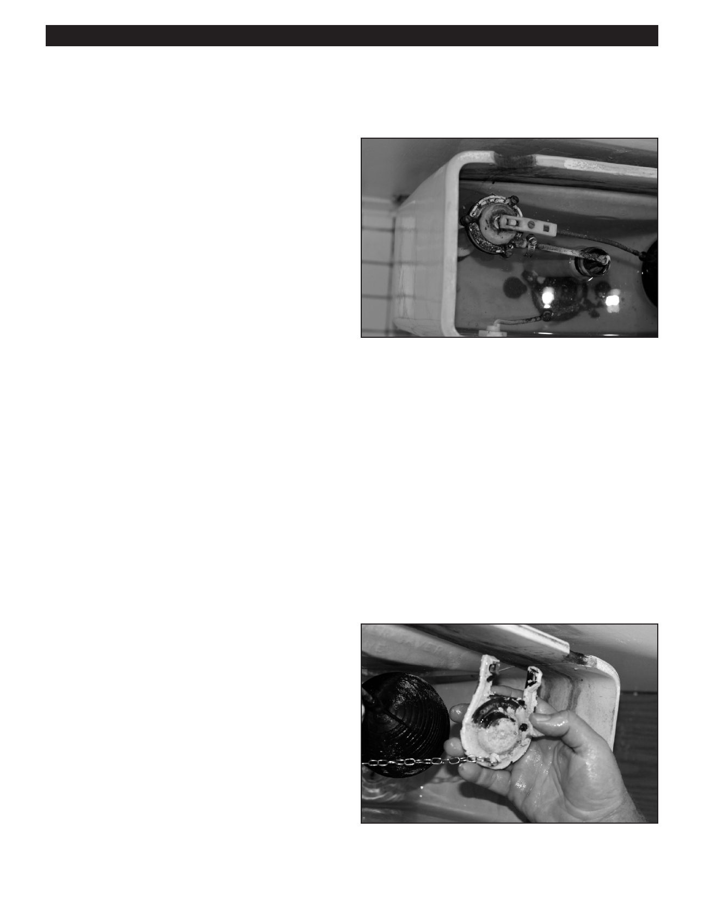

PA RT I C I PA N T R E S O U R C E G U I D E
Replacing the Flush Valve and the Flapper (continued)
How-to Steps: Replacing a Flush Valve
1. Shut off the water to the toilet.
2. Remove the tank cover.
3. Flush the toilet to drain the tank, then dry the inside
of the tank.
4. Unscrew the water supply tube from the tank with
an adjustable wrench.
5. Using a ratchet wrench, unscrew the nuts connecting
the tank to the bowl.
6. Remove the tank and turn it upside-down.
7. With a tongue and groove pliers or spud wrench,
unscrew the nut to the flush valve.
8. Remove the old flush valve.
9. Replace the flush valve and attach it to the tank.
(Do not overtighten.)
10. Replace the tank and attach it to the seat.
(Do not overtighten.)
Note: It is a good idea to replace the tank to bowl
bolts any time this separation occurs.
11. Connect the water supply tube.
12. Turn on the water to the toilet.
13. Flush the toilet and check its operation.
Adjust if necessary.
How-to Steps: Replacing a Flapper
1. Shut off the water to the toilet.
2. Remove the tank cover.
3. Flush the toilet to drain the tank, then dry the inside of
the tank.
4. Remove the old flapper. (Disconnect the chain and
detach the flapper from the overflow pipe.)
5. Replace the flapper and make sure it sits evenly in the
flush valve opening.
6. Turn on the water to the toilet.
7. Flush the toilet and check its operation. Adjust if
necessary.
64